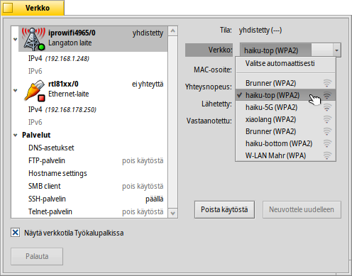
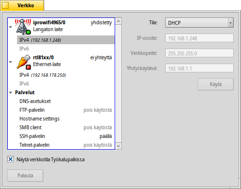
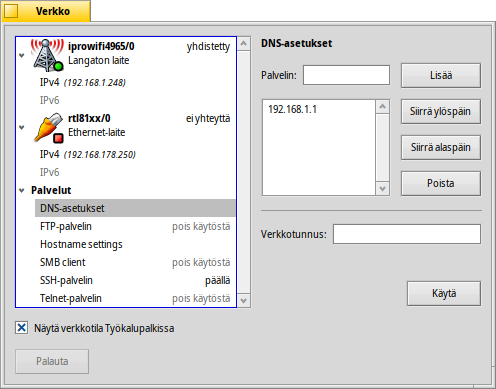
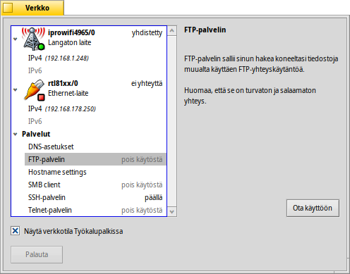

Verkkoasetukset
Verkkoasetukset
| Työpöytäpalkki: | ||
| Sijainti: | /boot/system/preferences/Network | |
| Asetukset: | /boot/system/settings/network/ |
Verkkoasetukset on yhden pysähdyksen paneeli kaikkien saatavilla olevien verkkolaitteiden ja palveluiden asettamiseksi. Vasemmalla on kokoontaitettu luettelo laitteistasi ja palveluistasi, oikealla on valitun kohdan tietoja tai asetuksia.
Pohjalta löydät valintaruudun . tuo takaisin asetukset, jotka olivat aktiivisia, kun käynnistit paneelin.
Laitteet
Tässä näemme langattoman laitteen, joka käyttää iprowifi4965-ajuria. Ponnahdusvalikosta voit valita yhdistettävän WLAN-yhteyden. Valikon jokaisen WLAN-nimen jälkeen sinulle näytetään pieni kuvake, joka esittää signaalin voimakkuutta.
Sitten kun WLAN on valittu, Haiku yrittää kytkeytyä siihen automaattisesti jokaisen käynnistymisen yhteydessä. Valitse ja se yrittää kytkeytyä WLAN-verkkoon, jossa on ympäristön paras signaali.
Jos olet yhteydessä suojattuun verkkon, sinulta kysytään salasana ja sallitko yhteyden vain kerran vai aina, mikä tallentaa salasanan niin sinun ei tarvitse vaivautua kirjoittamaan sitä tulevaisuudessa.
Painikkeet alla sallivat sinulle toiminnot laite, tai yhteys.
Laitteen alapuolelta löydät luettelon käytettävissä olevistta yhteyskäytännöistä, IPv4 ja IPv6:
Ponnahdusvalikosta asetat tilan liitettäväksi elintärkeisiin verkkoparametreihin , ja . Voit valita :n hakemaan asetukset dynaamisesti verkosta (reititin jne.), tai määritellä ne itse valitsemalla ja painamalla kun olet valmis.
Asetukset kiinteillä yhteyksillä ovat samanlaiset, tietenkin ilman WLAN-yhteyden ponnahdusvalikkoa.
Palvelut
DNS-asetukset
Verkkosi (reititin jne.) tarjoaa verkkotunnuksen ja DNS-palvelimen IP-osoitteen käyttäessäsi DHCP:tä. Voit lisätä ja poistaa DNS-palvelimia sekä säätää niiden prioriteettia siirtämällä niitä luettelossa ylöspäin ja alaspäin oikealla puolella olevilla painikkeilla.
aktivoi uudet asetuksesi.
FTP, SSH, Telnet
Haiku tarjoaa muutamia palvelimia, jotka voit tai . Ikkunan oikealta puolelta löydät tietoja tuosta tietystä palvelimesta, joka pitäisi ottaa huomioon: FTP- ja Telnet-palvelimet ovat turvattomia ja salaamattomia. Oletuksena ne on otettu pois käytöstä ja ne pitäisi ottaa käyttöön vain jos olet tietoinen turvariskeistä.
Asetustiedostot
Verkkoasetukset löytyvät kansiosta /system/settings/network/. Tavallisesti sinun ei tarvitse välittää niistä, muuten kuin ehkä kyetäksesi poistamaan ne ja aloittaaksesi puhtaalta pöydältä, kun asiat ovat menneet hirveästi pieleen...
Yksi tiedosto on kuitenkin todella hyödyllinen, erityisesti kun työskentelet Pääteikkunassa. Tiedosto hosts sallii sinun määritellä aliaksia verkon määrätyille IP-osoitteille. Esimerkiksi:
127.0.0.1 localhost #loopback 192.168.178.3 NAS #Synology 192.168.178.102 XIOS #Mediaplayer
Paitsi loopback kohteelle localhost, minulla on IP Synology-varasto "NAS":n alla ja mediasoitin "XIOS":n alla. FTP-istunnon käynnistämiseksi verkkovaraston kanssa minun ei tarvitse muistaa sen IP-osoitetta, vaan voin vain kirjoittaa:
ftp NAS